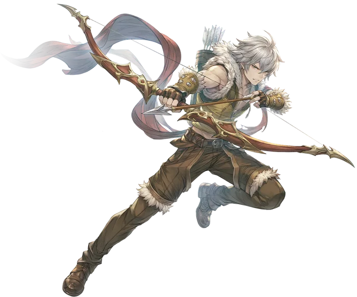

Third tier
Sniper
Sniper is the primary advancement option for Hunters. It gives up on the usage of both traps and Falcon skills to perfect the use of the bow, becoming something of a Physical Caster designed to bring down enemies from a safe distance.
The primary mechanic for the Sniper class is Preparation. Using the Sniper opener skills grants Preparation Counters, each of which enhances the damage and reduces the cast time of their finishers, as well as slightly modifies the behavior of the openers themselves. Preparation comes with one important drawback though: any movement the user makes removes all Preparation Counters immediately.
This creates a situation where the Sniper must think carefully before firing off all of their skills. Is a chain of low cooldown openers enough to take the target down without relying on finishers? Can they reliably get the finisher off before mobs reach them and start dealing too much damage to handle? Handling each encounter requires careful planning and precise execution to draw the most out of each skill.
To aid in this, the Sniper also gets access to a number of utility skills. Tactical Retreat allows a single movement without sacrificing Preparation Counters, Sniper's Resolve provides a massive amount of damage reduction based on the number of Preparation Counters active, and Called Shot maximizes the damage dealt and minimizes the damage taken from a single target chosen by the Sniper.
Sniper is a class that requires careful planning and a high level of execution skill to make the most of, but those that take the time to learn will be rewarded with exceptional damage output at fantastic range.

Skill list
Skills
Skill names and effects are kept in English because that is how they appear in game.
- Sniper's Resolve
The user steels themselves, determined to keep fighting no matter the odds. For a short time, the user takes reduced damage from all attacks based on the number of Preparation Counters they have. If they already have three Preparation Counters when casting this skill, most damaging Status Effects are removed.
- Tactical Retreat
The user instantly jumps to the targeted location, moving them out of harm's way, then refreshes all active Preparation Counters. If the user already had three Preparation Counters before casting, all enemies around their previous location are also Slowed.
- Called Shot
The user marks a target for elimination. While marked, the user deals more damage to them and takes less damage from them, but all attacks against unmarked targets miss. If the user has three Preparation Counters when casting this skill, the marked target is also inflicted with the Vulnerable Status. Otherwise, they gain Preparation Counters.
- Shrouding Shot
The user fires an arrow cloaked in dark fog to inhibit the target's vision. Deals damage to a single target and generates one Preparation Counter. Attempts to inflict the Blind Status, with an increased duration for each Preparation Counter the user has. If the user already had three Preparation Counters, casting this skill refreshes the CD of Hammer Shot.
- Hammer Shot
Fires an arrow with tremendous force, keeping the target from reaching the user. Deals Ranged Physical damage to a single target and generates one Preparation Counter, then knocks the target back. The knockback distance is increased for each Preparation Counter the user has. If the user already had three Preparation Counters, this skill refreshes the CD of Razor Shot.
- Razor Shot
Fires a serrated arrow at the target, slicing through flesh to cause heavy bleeding. Deals Ranged Physical damage to a single target and generates one Preparation Counter. Attempts to inflict the Internal Bleeding Status, with an increased duration for each Preparation Counter the user has. If the user had three, it refreshes the duration of Piercing Shot.
- Piercing Shot
Fires a tapered arrow at the target, intended to pierce through even the toughest armor. Deals Ranged Physical damage to a single target and generates one Preparation Counter. Attempts to inflict the Vulnerable Status, with an increased duration for each Preparation Counter the user has. If the user had three, it refreshes the CD of Shrouding Shot.
- Arrow Storm
The user fires a massive barrage of arrows at the target, striking them and all enemies in a wide area around them for tremendous damage. All enemies struck are left Slow and Vulnerable. For each Preparation Counter the user has, the Cast Time of this skill is greatly reduced, and its damage is greatly increased. After casting, all Preparation Counters are lost.
- Heaven's Arrow
The user fires an enormous arrow up into the sky, arcing it to fall on their foes from directly overhead. All enemies struck are Stunned. For each Preparation Counter the user has, the Cast Time of this skill is greatly reduced, and its damage is greatly increased. After casting, all Preparation Counters are lost.
- Explosive Barrage
The user fires an arrow strapped with a powerful explosive that detonates on impact, dealing tremendous damage to the target and all enemies around them. All enemies struck are left Blind and Burning. For each Preparation Counter the user has, the Cast Time of this skill is greatly reduced, and its damage is greatly increased. After casting, all Preparation Counters are lost.
- Numbing Volley
The user fires a volley of arrows that disperse a potent numbing toxin, dealing damage and inflicting the Sleep status on all enemies in the area. For each Preparation Counter the user has, the Cast Time of this skill is greatly reduced, and its damage is greatly increased. After casting, all Preparation Counters are lost.
Come find out what changed
Make an account now, grab the client, and be there when the servers go up.